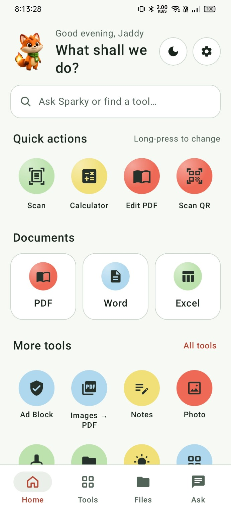
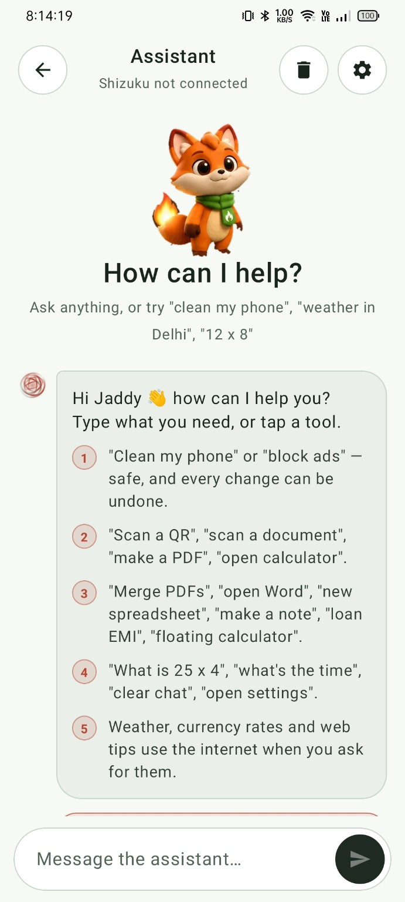

A look that feels like you
The app offers light and dark themes. Start with the one that suits your day.
YOUR POCKET-SIZED POSSIBILITY MACHINE
Scan it. Solve it. Save it. Make everyday things feel effortless
with your favourite tools — and one very helpful fox.
Turn a paper moment into a digital one. Scan, edit, and keep everything together.
Explore document tools ↗

01 / A LITTLE OF EVERYTHING
Your daily tasks deserve a better home.
Find your next go-to tool.
No tools match that search. Try “PDF” or “calculator”.
02 / SMALL FOX. BIG HELP.
Skip the searching. Tell Sparky what you want to do, and find the right tool to get started.
Choose a command to see how Sparky helps.
This preview demonstrates tool routing. It does not access your phone.
03 / NOTHING HIDDEN BEHIND THE MOCKUP
Your actual app screens.
Choose a view and explore the details.
Quick actions, separate document tools, and your everyday essentials. All within reach.
04 / THOUGHTFUL BY DESIGN
The app offers light and dark themes. Start with the one that suits your day.
Cleaner and Restore Apps live together. Shizuku setup is required for supported app-management actions.
Weather, currency rates, and web tips use the internet. Ad blocking uses Private DNS; coverage depends on the app and service.
Bring your everyday toolkit together with Mobile Handler.
Download the APK ↓Direct download from this site · Android 8.0 or newer · version 2.0.4 (51 MB).
Android may ask you to allow installs from your browser.
This is the Mobile Handler product website. The interactive previews explain the app; the Android APK runs on your phone.
Yes. The supplied app screens show individual PDF Editor, Word Editor, and Excel Editor entries.
The app exposes Shizuku connection settings for phone-management features. Follow the app's setup guidance before using those tools.
Use the GitHub release link above, or the “Check for updates” action in the app's settings.